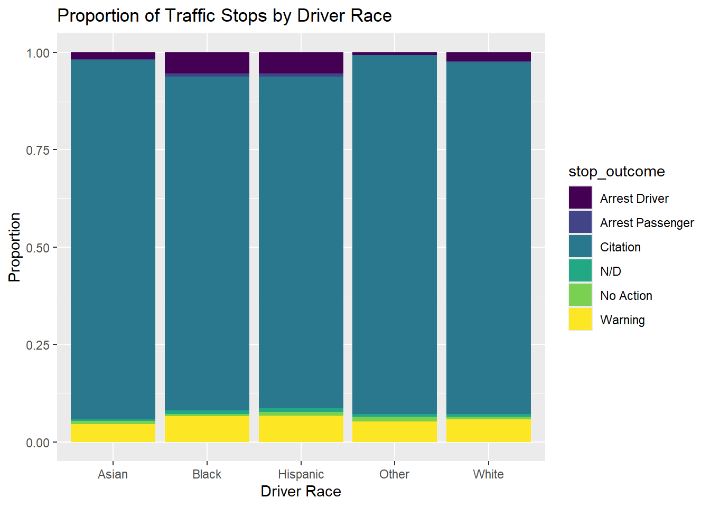
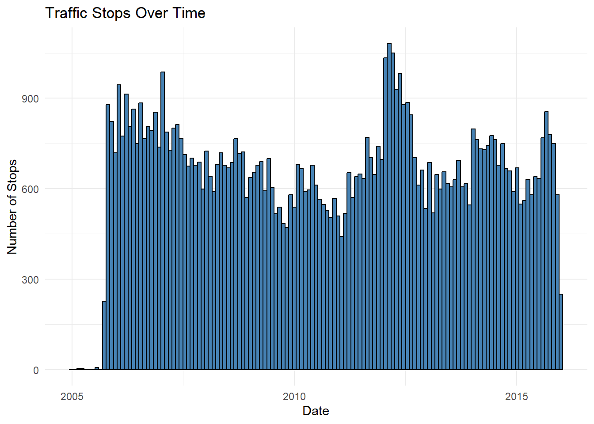
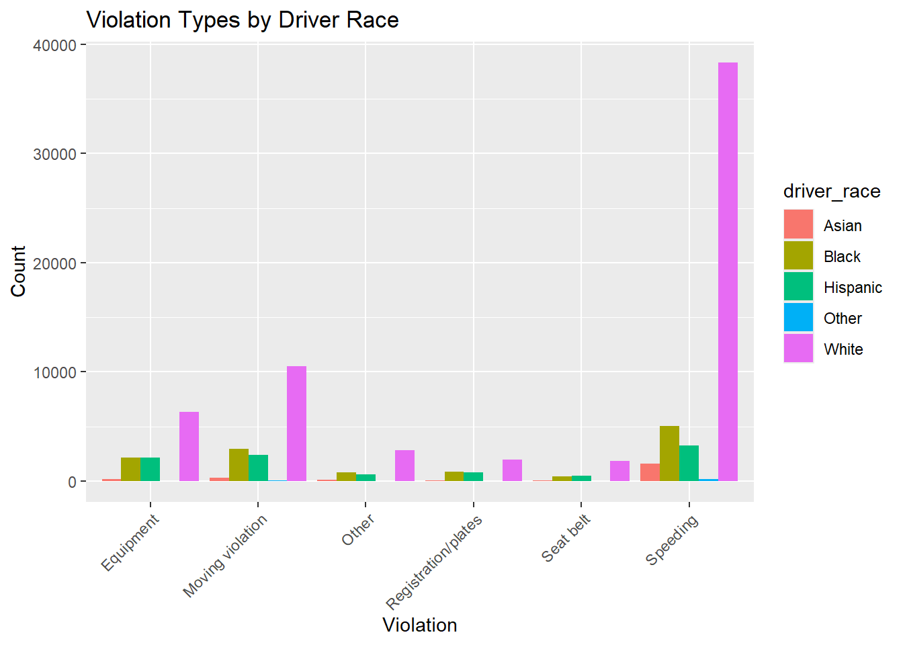
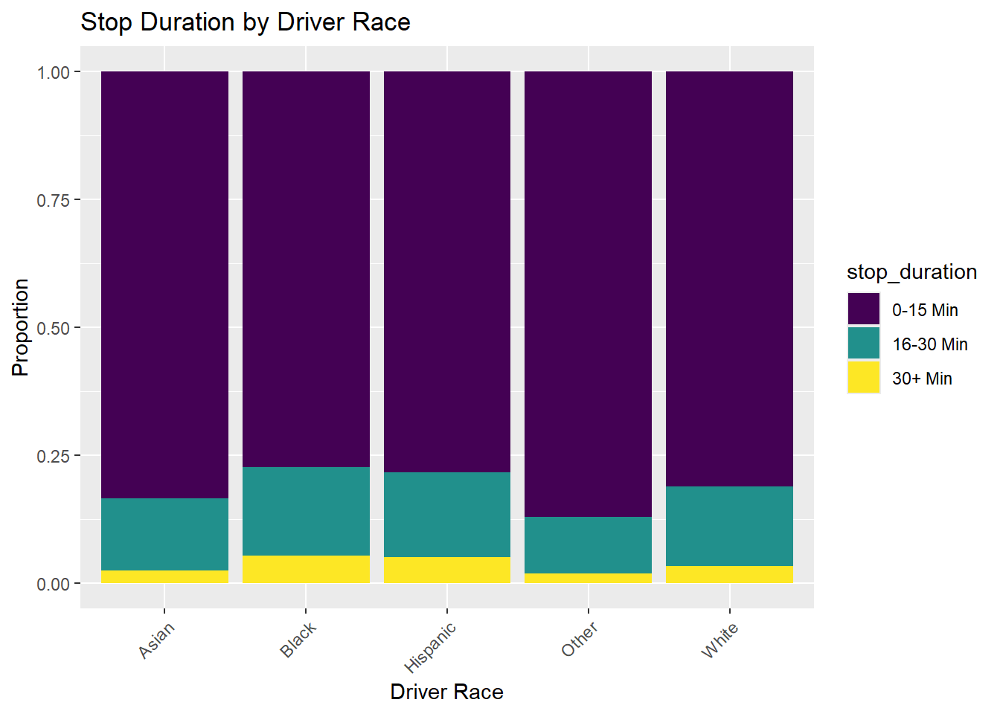
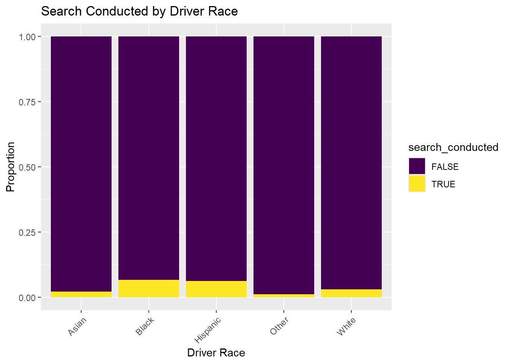
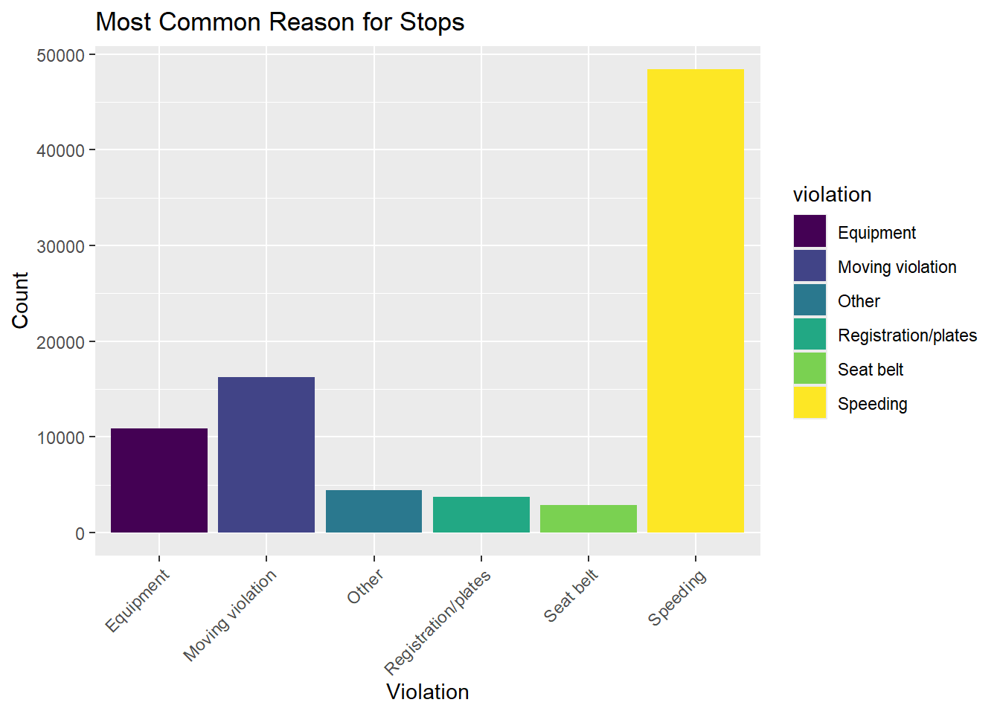

# Removing empty rows from the dataset
traffic_data %>%
filter(!is.na(driver_race) &
!is.na(driver_gender) &
!is.na(violation_raw) &
!is.na(violation) &
!is.na(search_conducted) &
!is.na(stop_outcome) &
!is.na(stop_duration) &
!is.na(drugs_related_stop)) %>%
select(-state, -county_name)Data
We describe the sources of our data and the cleaning process.
For our study, we have sourced a dataset from the Stanford Policing Project, which supplies data on traffic stops across the country from the period of about 2005 to 2015. For this study we would like to look at areas of the country that are not a common focus of many studies, so the first part of our data will come from Rhode Island traffic stops.
The data we have will focus on Rhode Island traffic stops. can be found on https://www.kaggle.com/datasets/mustafaadelibrahim/traffic-stops-in-rhode-islandpolicing-activities?resource=download
The full database, with traffic data for all states can be found on https://openpolicing.stanford.edu/data/
The dataset has 15 variables of focus: state, stop_date, stop_time, county_name, driver_gender, driver_race, violation_description, violation, search_conducted, search_type, stop_outcome, is_arrested, stop_duration, drugs_related_stop, and district. This data set only focused on Rhode Island so the state was irrelevant. Stop_date and stop_time stated the date and time of day that the traffic stop occurred. The county_name was an empty column, so we simply removed it for our cleaned dataset. Driver_gender and driver_race detailed the gender and race of the driver who was stopped. The variable violation gave a general classification for the violation while violation_description gave a more detailed description of the reason for the traffic stop. Search_conducted (boolean), search_type, stop_outcome, is_arrested (boolean), stop_duration, drugs_related_stop (boolean) gave more details as to what occurred during the traffic stop which gives us a better idea for the severity of the traffic violation.
Each row in the dataset corresponds to a particular traffic stop incident, and records data for the traffic stop according to the variables listed above. Our data cleaning, visualization, and initial analysis will be as follows:
To clean the dataset for analysis, our first step was to remove all rows that are missing values for our vairables of focus (the following is a chunk from our cleaning script]):
Next, we converted the stop_time variable, which was previously recorded as the number of seconds past 12:00am at which the stop occured, into a more readable format. To do this, we simpy apply a function which will convert seconds into the form hour:minute:second in military time (can also be found in the cleaning script])):
secs_to_time_of_day <- function(seconds) {
hours <- (seconds %/% 3600) %% 24
minutes <- (seconds %/% 60) %% 60
secs <- seconds %% 60
sprintf("%02d:%02d:%02d", hours, minutes, secs)
}
traffic_data_cleaned$stop_time <- as.numeric(traffic_data_cleaned$stop_time)
# Function to convert sec to time of day
traffic_data_cleaned$stop_time <- sapply(traffic_data_cleaned$stop_time, secs_to_time_of_day)The following graphs and tables show a brief visual summary of the distribution of traffic stops across race. Although we can see that the distribution may be skewed by the population proportions for each race, we can see that whites are stopped most frequently, then blacks, then hispanics, then asians.
source(
"scripts/eda_traffic_data.R",
echo = F
)── Attaching core tidyverse packages ──────────────────────── tidyverse 2.0.0 ──
✔ dplyr 1.1.4 ✔ readr 2.1.5
✔ forcats 1.0.0 ✔ stringr 1.5.1
✔ ggplot2 3.5.1 ✔ tibble 3.2.1
✔ lubridate 1.9.3 ✔ tidyr 1.3.1
✔ purrr 1.0.2
── Conflicts ────────────────────────────────────────── tidyverse_conflicts() ──
✖ dplyr::filter() masks stats::filter()
✖ dplyr::lag() masks stats::lag()
ℹ Use the conflicted package (<http://conflicted.r-lib.org/>) to force all conflicts to become errorstibble [86,536 × 13] (S3: tbl_df/tbl/data.frame)
$ stop_date : Date[1:86536], format: "2005-01-04" "2005-01-23" ...
$ stop_time : chr [1:86536] "12:55:00" "23:15:00" "04:15:00" "17:15:00" ...
$ driver_gender : chr [1:86536] "M" "M" "M" "M" ...
$ driver_race : chr [1:86536] "White" "White" "White" "White" ...
$ violation_raw : chr [1:86536] "Equipment/Inspection Violation" "Speeding" "Speeding" "Call for Service" ...
$ violation : chr [1:86536] "Equipment" "Speeding" "Speeding" "Other" ...
$ search_conducted : logi [1:86536] FALSE FALSE FALSE FALSE FALSE FALSE ...
$ search_type : chr [1:86536] NA NA NA NA ...
$ stop_outcome : chr [1:86536] "Citation" "Citation" "Citation" "Arrest Driver" ...
$ is_arrested : logi [1:86536] FALSE FALSE FALSE TRUE FALSE FALSE ...
$ stop_duration : chr [1:86536] "0-15 Min" "0-15 Min" "0-15 Min" "16-30 Min" ...
$ drugs_related_stop: logi [1:86536] FALSE FALSE FALSE FALSE FALSE FALSE ...
$ district : chr [1:86536] "Zone X4" "Zone K3" "Zone X4" "Zone X1" ...
NULL
stop_date stop_time driver_gender driver_race
Min. :2005-01-04 Length:86536 Length:86536 Length:86536
1st Qu.:2008-01-05 Class :character Class :character Class :character
Median :2010-11-11 Mode :character Mode :character Mode :character
Mean :2010-10-05
3rd Qu.:2013-05-11
Max. :2015-12-31
violation_raw violation search_conducted search_type
Length:86536 Length:86536 Mode :logical Length:86536
Class :character Class :character FALSE:83229 Class :character
Mode :character Mode :character TRUE :3307 Mode :character
stop_outcome is_arrested stop_duration drugs_related_stop
Length:86536 Mode :logical Length:86536 Mode :logical
Class :character FALSE:83458 Class :character FALSE:85674
Mode :character TRUE :3078 Mode :character TRUE :862
district
Length:86536
Class :character
Mode :character
First, we will visualize the distribution of key variables (e.g., ‘race’). The plots used to visualize the data can be found in the EDA script
print(plot1)print(plot2)
print(plot3)
We can see from the three plots above that stopped drivers are most frequently white, then black, then hispanic, then asian. Among each race, it seems citations are the most likeley outcome, then warning, then arrest. It seems the driver is arrested more frequently for Blacks and Hispanics then other races. In addition, the frequency of traffic stops over time seems roughly constant, with a spike around 2013.
print(plot4)
print(plot5)
print(plot6)
From the three plots above, we can see from the first that the majority demographic for each violation type is white, and speeding also appears to be the most common violation type, then moving violaitons. For the second, we see that stop duration is the shortest for Asians and other, with Black, Hispanic, and Whites slighlty longer. Finally, we note from the thrid graph that Blacks and Hispanics are searched during a stop with a slightly higher frequency than other races (we will preform proportion testing on this difference on the Analysis page)
print(plot7)
print(plot8)print(plot9)
Finally, based on our last set of plots, we can see the distribution of stop reasons being most concentrated at speeding, moving violations, and equipment violations. We can see across all races that stops are very infrequently drug-related, but most frequent for Blacks, then Hispanics, then Whites, and rarely ever for Asians or other races. Finally, the distribution for stop outcome in roughly equal across all races, while Blacks and Hisapnics are stopped slightly more frequently, and given warnings slightly more frequently than other races.